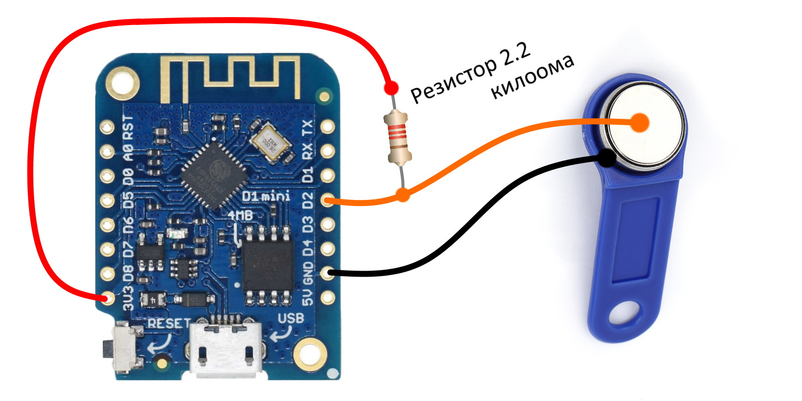
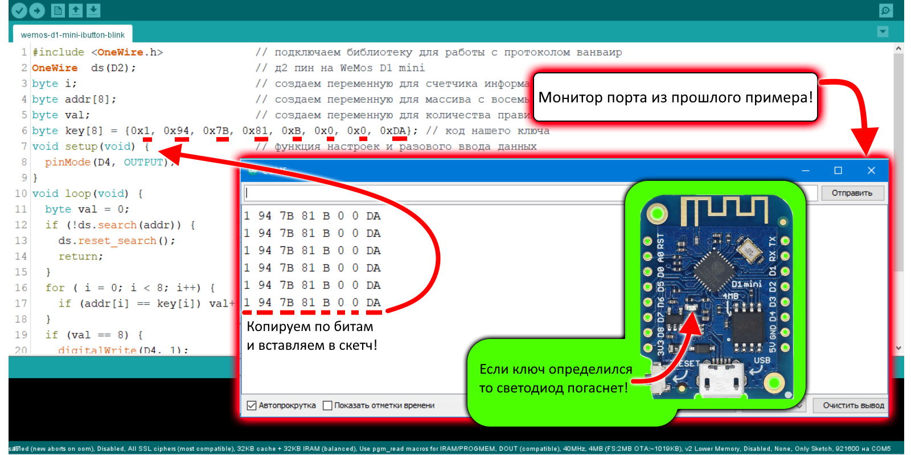
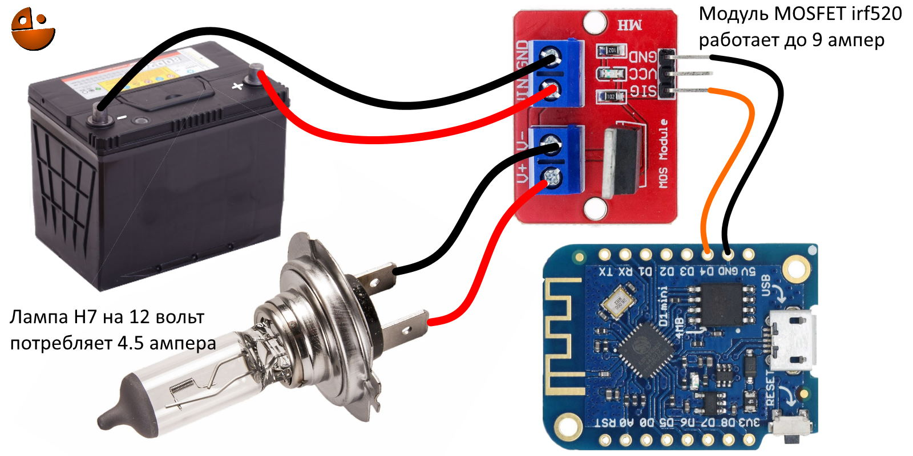
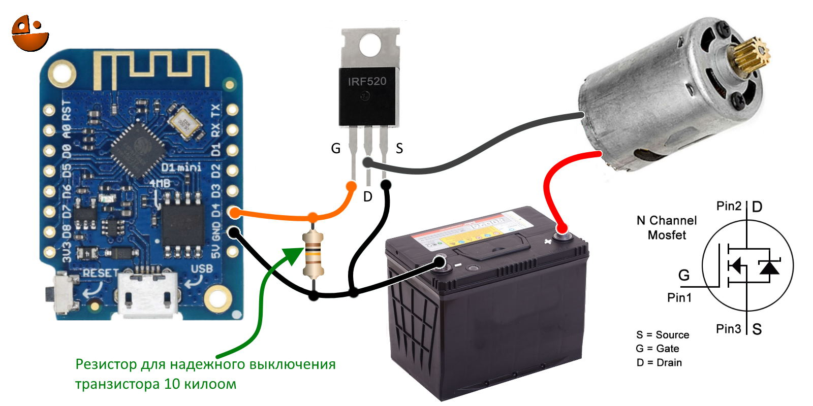
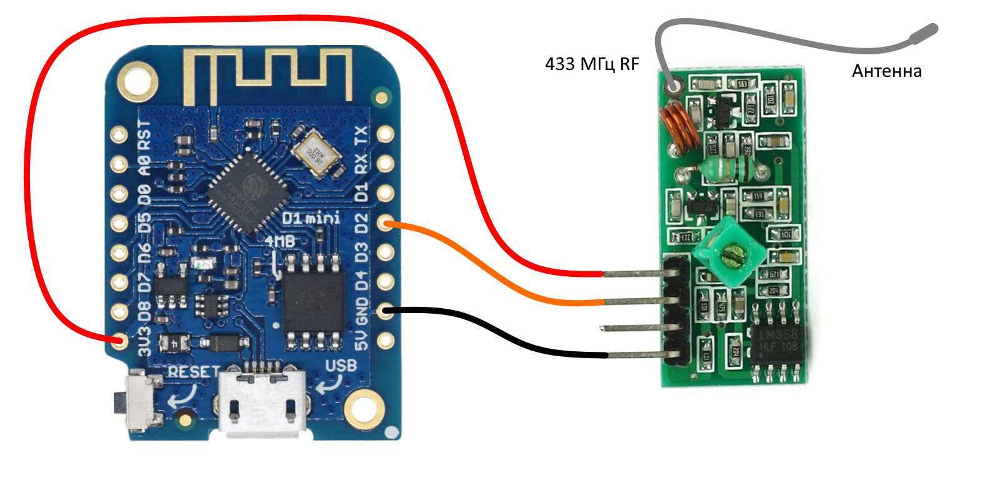
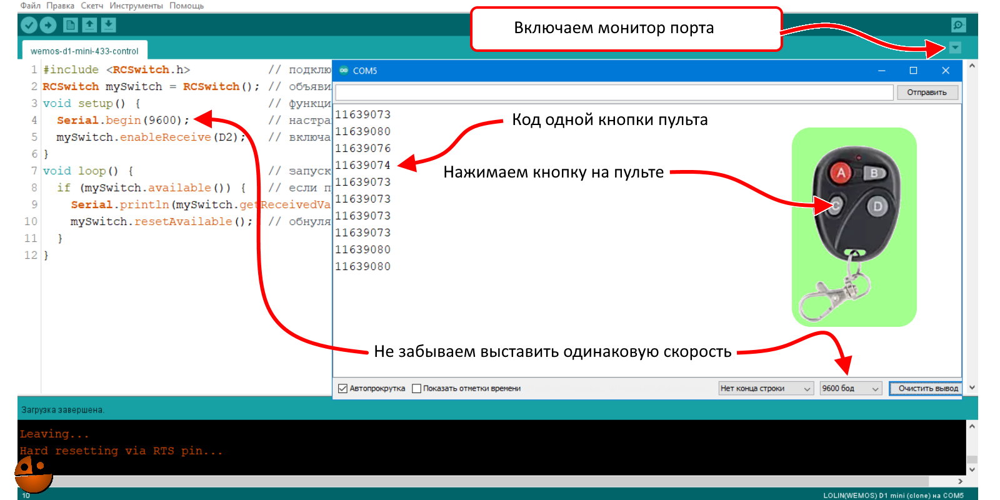
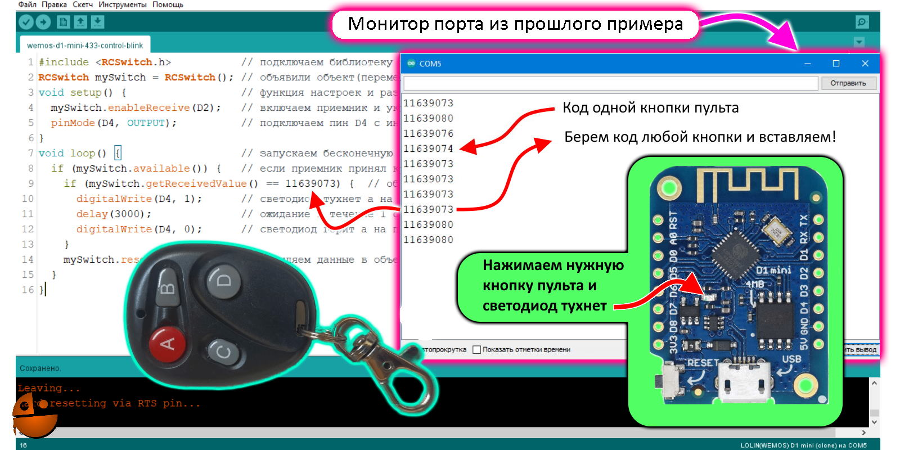

Здесь расположены небольшие скетчи (прошивки) для esp8266 для быстрой проверки различных плат и пр. |
|
Здесь расположены небольшие скетчи (прошивки) для esp8266 для быстрой проверки различных плат и пр. |
|
В прошлом примере мы разобрались с тем как считать код электронного ключа ibutton, теперь разберемся как использовать на деле работу ключа с ЕСП. Для начала нам надо взять код ключа (как взять код в прошлом примере) и по битам вставить в строку в скетче как на рисунке, далее прислоняем ключ и на д4 у нас появляется +3.3 вольта и тухнет светодиод на плате, так как у него инверсная схема включения, затем через две секунды на пине д4 будет 0 вольт и светодиод вновь загорится. В следующем скетче разберемся с полевым транзистором он позволит включать мощные нагрузки такие как замок или лампы автомобиля и можно будет добавить этот скетч с ibutton чтоб собрать полноценное устройство.
#include <OneWire.h> // подключаем библиотеку для работы с протоколом ванваир
OneWire ds(D2); // д2 пин на WeMos D1 mini
byte i; // создаем переменную для счетчика информации с ключа
byte addr[8]; // создаем переменную для массива с восемью значениями (8 переменных в одной)
byte val; // создаем переменную для количества правильных проверок
byte key[8] = {0x1, 0x94, 0x7B, 0x81, 0xB, 0x0, 0x0, 0xDA}; // код нашего ключа
void setup(void) { // функция настроек и разового ввода данных
pinMode(D4, OUTPUT); // настраиваем пин D4 на выход Wemos D1 Mini инверсный светодиод
}
void loop(void) { // запускаем бесконечную обработку кода (цикл)
byte val = 0; // обнуляем переменную для количества правильных проверок
if (!ds.search(addr)) { // если обнулен пин ds(D4) считываем 8 бит в массив, если считалось то идем дальше
ds.reset_search(); // останавливаем считывание с ds(D4)
return; // прекращаем вычисления
}
for ( i = 0; i < 8; i++) { // цикл на 8 действий
if (addr[i] == key[i]) val++; // если считанный бит равен биту из ключа то к переменной val прибавляем 1
}
if (val == 8) { // если переменная val равна 8 (8 правильных битов ключа)
digitalWrite(D4, 1); // светодиод гаснет на пине д4 +3.3 вольта
delay(2000); // пауза 2 секунды
digitalWrite(D4, 0); // светодиод загорается на пине д4 0 вольт
}
ds.reset(); // обновление считывания с ds(D4)
delay(100); // пауза 0.1 секунда
}
Подключаем по схеме.
Из монитора порта с прошлого примера берем код ключа и вставляем в скетч.
Подключение модуля полевого транзистора (MOSFET) к ЕСП. В прошлом примере про электронный ключ ibutton я пообещал что расскажу про подключение MOSFET транзистора для управления различными мощными нагрузками такими как электромагнитные замки, лампы и пр. Для начала возьмем готовый модуль транзистора MOSFET irf520 и самый простой скетч для мигания светодиодом который использовался в самом начале примеров, подключим по схеме и все мы можем управлять различными нагрузками в режиме включить выключить, а в следующем примере используем уже известный скетч ШИМа и добавим к нему плавное включение, далее сами соберем схему шим модуля.
ЕСЛИ НЕ ЗАЛИВАЕСЯ СКЕТЧ В ЕСП, ОТКЛЮЧИТЕ МОДУЛЬ ВРЕМЕННО ОТ ЕСП
void setup() { // функция настроек и разового ввода данных
pinMode(D4, OUTPUT); // инициализация контакта D4 с подключенным инверсным светодиодом
}
void loop() { // запускаем бесконечную обработку кода (цикл)
digitalWrite(D4, 1); // светодиод тухнет а лампа загорается
delay(1000); // ожидание в течение 1 секунда
digitalWrite(D4, 0); // светодиод горит а лампа тухнет
delay(2000); // ожидание в течение 2 секунд
}
Подключаем по схеме.
Продолжаем эксперименты с транзистором MOSFET на плате ЕСП. В прошлом примере был самый простой скетч и готовый модуль, теперь у нас будет с помощью ШИМа плавный пуск, далее рабочий режим, и выключение. Также будем выводить диагностическую информацию о режимах работы в монитор порта. Транзистор возьмем тот же (irf520) что и в модуле так как мало какие транзисторы MOSFET работают от напряжения 3.3 вольта, хоть и на многих заявлено открытие от 2 вольт, а на Ардуино нано такой проблемы нет там 5 вольт выходы и к ним можно подключить хоть транзистор MOSFET на 100 ампер.
ЕСЛИ ПРОБЛЕМЫ С ЗАГРУЗКОЙ СКЕТЧА В ЕСП, ОТКЛЮЧИТЕ МОДУЛЬ ВРЕМЕННО ОТ ЕСП
void setup() // функция настроек и разового ввода данных
{
pinMode(D4, OUTPUT); // д4 пин с инверсным светодиодом настраиваем на выход
analogWriteFreq(100); // выставляем частоту (100.. 40000 Гц)
Serial.begin (9600); // настраиваем скорость монитора порта
}
void loop() // запускаем бесконечную обработку кода (цикл)
{
Serial.println ("Плавный пуск"); //выводим в монитор порта "Плавный пуск"
for (byte i = 0; i <= 254; i++ ) // цикл for (переменную i ставим в ноль; если i меньше 254 продолжаем цикл; прибавляем 1 к i)
{ // цикл for начинается от этой скобки
analogWrite(D4, i); // включаем работу шим на пин д4, 0-254 скважность передаем через i
delay(25); // пауза 0.25 секунды
} // цикл for заканчивается на этой скобке , так и крутится пока i не станет 254 и программа идет дальше
Serial.println ("Рабочий режим"); //выводим в монитор порта "Рабочий режим"
digitalWrite(D4, 1); // подаем на пин д4 3.3 вольта
delay(10000); // ждем 10 секунд
Serial.println ("Выключено"); //выводим в монитор порта "Выключено"
digitalWrite(D4, 0); // выставляем пин д4 в 0 вольт
delay(5000); //ждем 5 секунд
}
Подключаем по схеме.
Подключаем модуль 433МГц к ЕСП и считываем коды пульта. В этом примере поработаем с популярным модулем для приема сигнала на частоте 433Мгц, обычно данный модуль идет в комплекте с модулем передатчика но мы будем только принимать сигналы с пульта. Пульт самый обычный тоже на 433МГц таких пультов великое множество у них от 2 до 8 кнопок, данную связку (пульт и приемник) используют в различных центральных замках автомобиля, в шлагбаумах, воротах и многом другом, в отличии от ИК пультов с ИК приемниками, им не надо прямую видимость и яркое солнце не влияет на прием сигнала. В этом скетче будем считывать коды пульта и выводить их в монитор порта, в следующем будем использовать пульт по назначению - включать что нибудь дистанционно.
#include <RCSwitch.h> // подключаем библиотеку RCSwitch.h берем её в Инструменты/управлять библиотеками
RCSwitch mySwitch = RCSwitch(); // объявили объект(переменные+функции) для работы с передатчиком и назвали его mySwitch
void setup() { // функция настроек и разового ввода данных
Serial.begin(9600); // настраиваем скорость монитора порта
mySwitch.enableReceive(D2); // включаем приемник и указываем пин для работы (д2)
}
void loop() { // запускаем бесконечную обработку кода (цикл)
if (mySwitch.available()) { // если приемник принял какие либо данные
Serial.println(mySwitch.getReceivedValue()); // обрабатываем и выводим полученные данные в монитор порта
mySwitch.resetAvailable(); // обнуляем данные в объекте
}
}
Подключаем по схеме.
Открываем монитор порта и нажимаем кнопки на пульте (если нет антенны на модуле 433МГц то подносим пульт вплотную).
В прошлом примере мы подключали модуль 433 МГц к ЕСП и считывали коды кнопок с пульта, а в этом примере будем управлять с пульта встроенным светодиодом. Светодиод у нас находится на пине д4 и вы можете управлять этим пином электромагнитным замком двери, центральным замком автомобиля или освещением и пр. подключив транзистор MOSFET к ЕСП как в этом примере , позже рассмотрим подключение к ЕСП электромагнитных реле для управления мощной нагрузкой которыми удобно управлять с пульта и реализовать реверс на моторе. В этом скетче мы просто берем считанный код кнопки пульта и занесем его в программу, далее загружаем программу в ЕСП и если код пришедший с пульта совпал у нас потухнет встроенный светодиод затем пауза 3 секунды и светодиод вновь загорится. Другие кнопки пульта подключаются в программе аналогично первой, на них можно настроить другие пины ЕСП или другие алгоритмы работы пина например частое мигание светодиодом.
#include <RCSwitch.h> // подключаем библиотеку RCSwitch.h берем в Инструменты/управлять библиотеками
RCSwitch mySwitch = RCSwitch(); // объявили объект(переменные+функции) для работы с передатчиком и назвали его mySwitch
void setup() { // функция настроек и разового ввода данных
mySwitch.enableReceive(D2); // включаем приемник и указываем пин для работы (д2)
pinMode(D4, OUTPUT); // подключаем пин D4 с инверсным светодиодом (светодиод светит)
}
void loop() { // запускаем бесконечную обработку кода (цикл)
if (mySwitch.available()) { // если приемник принял какие либо данные
if (mySwitch.getReceivedValue() == 11639073) { // обрабатываем и сравниваем полученные данные с нашим кодом
digitalWrite(D4, 1); // светодиод тухнет а на пине д4 +3.3вольта
delay(3000); // ожидание в течение 1 секунда
digitalWrite(D4, 0); // светодиод горит а на пине д4 0 вольт
}
mySwitch.resetAvailable(); // обнуляем данные в объекте
}
}
Подключаем по схеме.
Нажимаем кнопки на пульте (если нет антенны на модуле 433МГц то подносим пульт вплотную).
